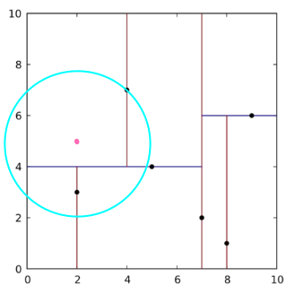

03-点云拓扑结构¶
- 点云拓扑之k-d Tree
- 点云拓扑之OCTrees 八叉树
点云分解之k-d Tree *¶
通过3D相机（雷达、激光扫描、立体相机）获取到的点云，一般数据量较大，分布不均匀，数据主要表征了目标物表面的大量点的集合，这些离散的点如果希望实现基于邻域关系的快速查找比对功能，就必须对这些离散的点之间建立拓扑关系。常见的空间索引一般是自上而下逐级划分空间的各种索引结构，包括BSP树，k-d tree、KDB tree、R tree、CELL tree、八叉树等。有了这些关系，我们就可以实现点云的降采样，计算特征向量，点云匹配，点云拆分等功能。
原理概述¶
k-d tree（ k-dimensional tree）是计算机科学中用于在k维空间中一些点建立关系的数据结构。它是一个包含特定约束的二叉搜索树。k-d tree对于范围搜索和最近邻居搜索非常有用。我们通常只处理三维空间的点云，因此我们所有的k-d树都是三维空间的。
k-d树的每个级别都使用垂直于相应轴的超平面沿特定维度拆分所有子级。在树的根部，所有子项都将根据第一维进行拆分（即，如果第一维坐标小于根，则它将位于左子树中，如果大于根，则显然位于右边的子树）。树中向下的每个级别都在下一个维度上划分，其他所有元素都用尽后，将返回到第一个维度。他们构建k-d树的最有效方法是使用一种分区方法，例如快速排序所用的一种方法，将中值点放置在根上，所有具有较小一维值的东西都放置在根部，而右侧则更大。然后，在左右两个子树上都重复此过程，直到要分区的最后一棵树仅由一个元素组成。
树的分割¶
选轴点策略一：按照x-y-z-x-y-z...顺序向下分割
- 2D的kd-tree划分方式

- 当一个点根据k-d tree查找最近点的过程（这是个动图）

选轴点策略二：取方差变化最大维度的中位数
对于所有描述子数据（特征矢量），统计他们在每个维度上的数据方差，挑选出方差中最大值，对应的维就是下一个要分割的维度。数据方差大说明沿该坐标轴方向上数据点分散的比较开。这个方向上，进行数据分割可以获得最好的平衡。数据点集位于正中间的那个数据点被选为轴点。
但是问题来了，理论上空间均匀分布的点，但是一些特殊的情况中，还是会出现问题，比如
这样就会出现很多长条的分割，对于KDTree来说是很不利的。
选点策略三：数据范围最大纬度的中位数
为了避免这种情况，需要修改一下算法，纬度的选择的依据为数据范围最大的那一维作为分割纬度，之后也是选中这个纬度的中间点作为轴点，然后进行分割，分割出来的结果是：
这种结果显然对于最邻近搜索是非常友好的。
最近邻搜索¶
查找案例1：
红色点为要查询的点(2.1, 2.9)，通过二叉搜索，根据x=2.1 < 7，得到节点(5,4)，根据y=2.9 < 4，得到节点(2,3)，则在k-d tree中找到离其最近的叶子节点(2,3)，这个叶子节点未必是最近的，理论上如果存在最近的点，这个店应该在圆形范围内。
上图我们通过肉眼可见，圆形区域内的确没有其他更近的点了，但是对于计算机来说，这个肉眼观察的过程是不存在的，需要用更严密的方式进行验证或检查操作，故而必须进行回溯操作。来验证当前的确是最近的点、如果不是，我们要找到真正最近的点。
于是我们通过下边的案例去进行回溯操作。
查找案例2：

红色点为要查询的点(2,5)，通过二叉搜索，其搜索路径为<(7,2),(5,4),(4,7)>，得到最近的临近叶子节点(4,7)，计算两者距离为2.828。无论这个值大小如何，我们直接向上回溯计算与(5,4)的距离为3.162，此时我们以红点(2,5)为圆心，2.828为半径做圆形，发现此圆形会与y=4超平面交割，则需要进入(5,4)的左子空间继续查找。
此时需要将(2,3)节点加入到搜索路径变为<(7,2),(2,3)>，之前的两个已被回溯消掉，此时计算红点到(2,3)的距离2比到(5,4)的距离更近，故将最近临点更新为(2,3)，最近距离更新为5。，然后以红点(2,5)为圆心，2为半径做圆形，发现其不和x=7超平面交割。则此路径搜索完毕，最近临点为(2,3)，最近距离为2。
-
3D划分k-d tree


代码示例¶
以下案例通过两种方式进行邻域搜索
- 方式一：指定搜索最近的K个邻居
- 方式二：通过指定半径搜索邻居
kd_tree.cpp
#include <pcl/point_cloud.h>
#include <pcl/kdtree/kdtree_flann.h>
#include <iostream>
#include <vector>
#include <ctime>
//#include <pcl/search/kdtree.h>
//#include <pcl/search/impl/search.hpp>
#include <pcl/visualization/cloud_viewer.h>
int
main(int argc, char **argv) {
// 用系统时间初始化随机种子
srand(time(NULL));
pcl::PointCloud<pcl::PointXYZ>::Ptr cloud(new pcl::PointCloud<pcl::PointXYZ>);
// 生成点云数据1000个
cloud->width = 1000;
cloud->height = 1; // 1 表示点云为无序点云
cloud->points.resize(cloud->width * cloud->height);
// 给点云填充数据 0 - 1023
for (size_t i = 0; i < cloud->points.size(); ++i) {
cloud->points[i].x = 1024.0f * rand() / (RAND_MAX + 1.0f);
cloud->points[i].y = 1024.0f * rand() / (RAND_MAX + 1.0f);
cloud->points[i].z = 1024.0f * rand() / (RAND_MAX + 1.0f);
}
// 创建KdTree的实现类KdTreeFLANN (Fast Library for Approximate Nearest Neighbor)
pcl::KdTreeFLANN<pcl::PointXYZ> kdtree;
// pcl::search::KdTree<pcl::PointXYZ> kdtree;
// 设置搜索空间，把cloud作为输入
kdtree.setInputCloud(cloud);
// 初始化一个随机的点，作为查询点
pcl::PointXYZ searchPoint;
searchPoint.x = 1024.0f * rand() / (RAND_MAX + 1.0f);
searchPoint.y = 1024.0f * rand() / (RAND_MAX + 1.0f);
searchPoint.z = 1024.0f * rand() / (RAND_MAX + 1.0f);
// K nearest neighbor search
// 方式一：搜索K个最近邻居
// 创建K和两个向量来保存搜索到的数据
// K = 10 表示搜索10个临近点
// pointIdxNKNSearch 保存搜索到的临近点的索引
// pointNKNSquaredDistance 保存对应临近点的距离的平方
int K = 10;
std::vector<int> pointIdxNKNSearch(K);
std::vector<float> pointNKNSquaredDistance(K);
std::cout << "K nearest neighbor search at (" << searchPoint.x
<< " " << searchPoint.y
<< " " << searchPoint.z
<< ") with K=" << K << std::endl;
if (kdtree.nearestKSearch(searchPoint, K, pointIdxNKNSearch, pointNKNSquaredDistance) > 0) {
for (size_t i = 0; i < pointIdxNKNSearch.size(); ++i)
std::cout << " " << cloud->points[pointIdxNKNSearch[i]].x
<< " " << cloud->points[pointIdxNKNSearch[i]].y
<< " " << cloud->points[pointIdxNKNSearch[i]].z
<< " (距离平方: " << pointNKNSquaredDistance[i] << ")" << std::endl;
}
// Neighbors within radius search
// 方式二：通过指定半径搜索
std::vector<int> pointIdxRadiusSearch;
std::vector<float> pointRadiusSquaredDistance;
// 创建一个随机[0,256)的半径值
float radius = 256.0f * rand() / (RAND_MAX + 1.0f);
std::cout << "Neighbors within radius search at (" << searchPoint.x
<< " " << searchPoint.y
<< " " << searchPoint.z
<< ") with radius=" << radius << std::endl;
if (kdtree.radiusSearch(searchPoint, radius, pointIdxRadiusSearch, pointRadiusSquaredDistance) > 0) {
for (size_t i = 0; i < pointIdxRadiusSearch.size(); ++i)
std::cout << " " << cloud->points[pointIdxRadiusSearch[i]].x
<< " " << cloud->points[pointIdxRadiusSearch[i]].y
<< " " << cloud->points[pointIdxRadiusSearch[i]].z
<< " (距离平方:: " << pointRadiusSquaredDistance[i] << ")" << std::endl;
}
pcl::visualization::PCLVisualizer viewer("PCL Viewer");
viewer.setBackgroundColor(0.0, 0.0, 0.5);
viewer.addPointCloud<pcl::PointXYZ>(cloud, "cloud");
pcl::PointXYZ originPoint(0.0, 0.0, 0.0);
// 添加从原点到搜索点的线段
viewer.addLine(originPoint, searchPoint);
// 添加一个以搜索点为圆心，搜索半径为半径的球体
viewer.addSphere(searchPoint, radius, "sphere", 0);
// 添加一个放到200倍后的坐标系
viewer.addCoordinateSystem(200);
while (!viewer.wasStopped()) {
viewer.spinOnce();
}
return 0;
}
- 实现效果：

输出结果¶
K nearest neighbor search at (834.26 469.506 42.1248) with K=10
811.675 503.8 11.0198 (距离平方: 2653.71)
831.143 528.575 49.1108 (距离平方: 3547.73)
895.526 474.046 15.4881 (距离平方: 4483.69)
800.533 404.722 17.5067 (距离平方: 5940.43)
883.627 521.055 80.4733 (距离平方: 6565.14)
812.125 504.955 118.511 (距离平方: 7581.4)
945.496 505.443 62.8462 (距离平方: 14094.3)
768.686 368.386 8.52981 (距离平方: 15653.6)
946.231 536.488 38.1303 (距离平方: 17040.2)
716.405 516.283 75.6063 (距离平方: 17198.9)
Neighbors within radius search at (834.26 469.506 42.1248) with radius=89.2612
811.675 503.8 11.0198 (距离平方:: 2653.71)
831.143 528.575 49.1108 (距离平方:: 3547.73)
895.526 474.046 15.4881 (距离平方:: 4483.69)
800.533 404.722 17.5067 (距离平方:: 5940.43)
883.627 521.055 80.4733 (距离平方:: 6565.14)
812.125 504.955 118.511 (距离平方:: 7581.4)
点云分解之octree八叉树¶
建立空间索引在点云数据处理中已被广泛应用，常见空间索引一般是自顶向下逐级划分空间的各种空间索引结构，比较有代表性的包括 BSP 树、KD 树、KDB 树、 R树、R+树、CELL 树、四叉树和八叉树等索引结构，而在这些结构中 KD 树和八叉树在 3D点云数据排列中应用较为广泛。 PCL 对八叉树的数据结构建立和索引方法进行了实现，以方便在此基础上对点云进行处理操作 。
原理概述¶
八叉树（Octree）的定义是：若不为空树的话，树中任一节点的子节点恰好只会有八个，或零个，也就是子节点不会有0与8以外的数目。那么，这要用来做什么？想象一个立方体，我们最少可以切成多少个相同等分的小立方体？答案就是8个。再想象我们有一个房间，房间里某个角落藏着一枚金币，我们想很快的把金币找出来，聪明的你会怎么做？我们可以把房间当成一个立方体，先切成八个小立方体，然后排除掉没有放任何东西的小立方体，再把有可能藏金币的小立方体继续切八等份….如此下去，平均在log_8(n) （n表示房间内的所有物体数）的时间内就可找到金币。因此，八叉树就是用在3D空间中的场景管理，可以很快地知道物体在3D场景中的位置，或侦测与其它物体是否有碰撞以及是否在可视范围内。
体素
这里引入了一个概念：Voxel翻译为体积元素，简称体素。描述了一个预设的最小单位的正方体
pcl的octree库提供了从点云数据创建具有层次的数据结构的方法。这样就可以对点数据集进行空间分区，下采样和搜索操作。每个八叉树节点有八个子节点或没有子节点。根节点描述了一个包围所有点的3维包容盒子。
pcl_octree实现提供了有效的最近邻居搜索（邻域搜索）API，例如“ 体素（Voxel）邻居搜索”，“ K最近邻居搜索”和“半径搜索邻居”。叶子节点类也提供其他功能，例如空间“占用率”和“每个体素（Voxel）的点密度”检查；序列化和反序列化功能可将八叉树结构有效地编码为二进制格式；此外，内存池实现减少了昂贵的内存分配和释放操作，以便快速创建八叉树。
下图说明了最低树级别的八叉树节点的体素边界框。八叉树体素围绕着兔子表面的每个3D点。红点代表点数据。该图像是使用octree_viewer创建的（visualization/tools/octree_viewer）。
代码示例¶
octree.cpp
#include <pcl/point_cloud.h>
#include <pcl/octree/octree_search.h>
#include <iostream>
#include <vector>
#include <ctime>
#include <pcl/visualization/cloud_viewer.h>
int
main(int argc, char **argv) {
srand((unsigned int) time(NULL));
pcl::PointCloud<pcl::PointXYZ>::Ptr cloud(new pcl::PointCloud<pcl::PointXYZ>);
// Generate pointcloud data
cloud->width = 1000;
cloud->height = 1;
cloud->points.resize(cloud->width * cloud->height);
for (size_t i = 0; i < cloud->points.size(); ++i) {
cloud->points[i].x = 1024.0f * rand() / (RAND_MAX + 1.0f);
cloud->points[i].y = 1024.0f * rand() / (RAND_MAX + 1.0f);
cloud->points[i].z = 1024.0f * rand() / (RAND_MAX + 1.0f);
}
// float resolution = 0.01f;
// 设置分辨率为128
float resolution = 128.0f;
// resolution该参数描述了octree叶子leaf节点的最小体素尺寸。
pcl::octree::OctreePointCloudSearch<pcl::PointXYZ> octree(resolution);
// 设置输入点云
octree.setInputCloud(cloud);
// 通过点云构建octree
octree.addPointsFromInputCloud();
pcl::PointXYZ searchPoint;
searchPoint.x = 1024.0f * rand() / (RAND_MAX + 1.0f);
searchPoint.y = 1024.0f * rand() / (RAND_MAX + 1.0f);
searchPoint.z = 1024.0f * rand() / (RAND_MAX + 1.0f);
// Neighbors within voxel search
// 方式一：“体素近邻搜索”,它把查询点所在的体素中其他点的索引作为查询结果返回,
// 结果以点索引向量的形式保存,因此搜索点和搜索结果之间的距离取决于八叉树的分辨率参数
std::vector<int> pointIdxVec;
if (octree.voxelSearch(searchPoint, pointIdxVec)) {
std::cout << "Neighbors within voxel search at (" << searchPoint.x
<< " " << searchPoint.y
<< " " << searchPoint.z << ")"
<< std::endl;
for (size_t i = 0; i < pointIdxVec.size(); ++i)
std::cout << " " << cloud->points[pointIdxVec[i]].x
<< " " << cloud->points[pointIdxVec[i]].y
<< " " << cloud->points[pointIdxVec[i]].z << std::endl;
}
// K nearest neighbor search
// 方式二：K 近邻搜索,本例中K被设置成10, "K 近邻搜索”方法把搜索结果写到两个分开的向量中,
// 第一个pointIdxNKNSearch 包含搜索结果〈结果点的索引的向量〉
// 第二个pointNKNSquaredDistance 保存相应的搜索点和近邻之间的距离平方。
int K = 10;
std::vector<int> pointIdxNKNSearch;
std::vector<float> pointNKNSquaredDistance;
std::cout << "K nearest neighbor search at (" << searchPoint.x
<< " " << searchPoint.y
<< " " << searchPoint.z
<< ") with K=" << K << std::endl;
if (octree.nearestKSearch(searchPoint, K, pointIdxNKNSearch, pointNKNSquaredDistance) > 0) {
for (size_t i = 0; i < pointIdxNKNSearch.size(); ++i)
std::cout << " " << cloud->points[pointIdxNKNSearch[i]].x
<< " " << cloud->points[pointIdxNKNSearch[i]].y
<< " " << cloud->points[pointIdxNKNSearch[i]].z
<< " (squared distance: " << pointNKNSquaredDistance[i] << ")" << std::endl;
}
// Neighbors within radius search
// 方式三：半径内近邻搜索
// “半径内近邻搜索”原理和“K 近邻搜索”类似,它的搜索结果被写入两个分开的向量中,
// 这两个向量分别存储结果点的索引和对应的距离平方
std::vector<int> pointIdxRadiusSearch;
std::vector<float> pointRadiusSquaredDistance;
float radius = 256.0f * rand() / (RAND_MAX + 1.0f);
std::cout << "Neighbors within radius search at (" << searchPoint.x
<< " " << searchPoint.y
<< " " << searchPoint.z
<< ") with radius=" << radius << std::endl;
if (octree.radiusSearch(searchPoint, radius, pointIdxRadiusSearch, pointRadiusSquaredDistance) > 0) {
for (size_t i = 0; i < pointIdxRadiusSearch.size(); ++i)
std::cout << " " << cloud->points[pointIdxRadiusSearch[i]].x
<< " " << cloud->points[pointIdxRadiusSearch[i]].y
<< " " << cloud->points[pointIdxRadiusSearch[i]].z
<< " (squared distance: " << pointRadiusSquaredDistance[i] << ")" << std::endl;
}
pcl::visualization::PCLVisualizer viewer("PCL Viewer");
viewer.setBackgroundColor(0.0, 0.0, 0.5);
viewer.addPointCloud<pcl::PointXYZ>(cloud, "cloud");
pcl::PointXYZ originPoint(0.0, 0.0, 0.0);
// 添加从原点到搜索点的线段
viewer.addLine(originPoint, searchPoint);
// 添加一个以搜索点为圆心，搜索半径为半径的球体
viewer.addSphere(searchPoint, radius, "sphere", 0);
// 添加一个放到200倍后的坐标系
viewer.addCoordinateSystem(200);
while (!viewer.wasStopped()) {
viewer.spinOnce();
}
}
- 实现效果
输出结果¶
Neighbors within voxel search at (728.352 1014.11 497.288)
729.309 1011.36 507.391
721.727 991.49 509.558
716.92 964.8 509.156
K nearest neighbor search at (728.352 1014.11 497.288) with K=10
729.309 1011.36 507.391 (squared distance: 110.546)
721.727 991.49 509.558 (squared distance: 706.013)
716.92 964.8 509.156 (squared distance: 2702.8)
781.837 1019.12 509.644 (squared distance: 3038.46)
734.146 947.255 527.363 (squared distance: 5407.46)
836.586 959.091 485.1 (squared distance: 14890.1)
689.258 915.96 432.53 (squared distance: 15355)
614.725 975.407 534.96 (squared distance: 15828.2)
692 1004.47 645.421 (squared distance: 23357.9)
755.147 949.876 359.909 (squared distance: 23716.8)
Neighbors within radius search at (728.352 1014.11 497.288) with radius=149.97
689.258 915.96 432.53 (squared distance: 15355)
729.309 1011.36 507.391 (squared distance: 110.546)
721.727 991.49 509.558 (squared distance: 706.013)
716.92 964.8 509.156 (squared distance: 2702.8)
614.725 975.407 534.96 (squared distance: 15828.2)
734.146 947.255 527.363 (squared distance: 5407.46)
836.586 959.091 485.1 (squared distance: 14890.1)
781.837 1019.12 509.644 (squared distance: 3038.46)
pcl_octree_viewer工具¶
- a -> 增加显示深度（减小体素大小）
- z -> 降低显示深度 （增加体素大小）
- v -> 隐藏或显示octree立方体
- b -> 隐藏或显示体素中心店
- n -> 隐藏或显示原始点云
- q -> 退出